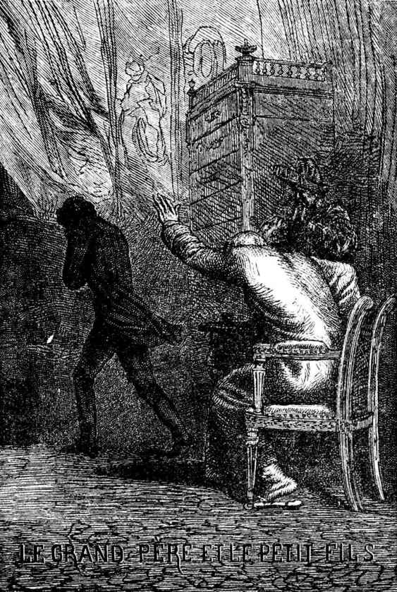

吉诺曼先生住在塞尔凡多尼街时，他经常在几处极好极高贵的客厅里走动。吉诺曼先生虽然是个资产阶级，但也受到接待。由于他有双重智慧，一是他原有的智慧，二是别人以为他有智慧，甚至大家还邀请他和奉承他。他每到一处就一定要出人头地，否则他宁可不去。有些人总爱千方百计地左右别人，使人家另眼看待他们，如果不能当头领，也一定要当小丑。吉诺曼的性情却不是那样，吉诺曼先生在他平时出入的那些保王派客厅里取得了出人头地的地位，却丝毫没有损及他的自尊心。处处都以他为权威。他居然和德·波纳德先生[1]，甚至和贝奇-皮伊-瓦莱先生[2]分庭抗礼。
一八一七年前后，他每星期必定要到附近的弗鲁街上T.男爵夫人家里去消磨两个下午，那是一位值得钦佩和尊敬的妇人，她的丈夫在路易十六时期当过法国驻柏林大使。T.男爵生前酷爱凝视和显圣[3]，在流亡期间他资财荡尽而死，留下的遗产只是十册红羊皮封面的金边精装手搞，内容是对麦斯麦和他的木盆的一些相当新奇的回忆。T.夫人因门第关系，没有把它发表，只靠一笔不知怎么保留下来的微薄年金过日子。T.夫人不和宫廷接近，她说那是一种“相当杂的地方”，她过的是一种高尚、寂寞、清寒、孤芳自赏的生活。少数几个朋友每星期在她只身独守的炉边聚会两次，于是组成了一种纯粹保王派的客厅。大家在那里喝着茶，随着各人一时的兴致，低沉或兴奋，而对这个世纪、宪章、波拿巴分子、卖蓝佩带给资产阶级的蠹政、路易十八的雅各宾主义等问题发出哀叹或怒吼，并且低声谈着御弟，日后的查理十世给予人们的希望。
大家在那里把那些称拿破仑为尼古拉的鄙俚歌曲唱得兴高采烈。公爵夫人们，世界上最雅致最可爱的妇女，也在那里欢天喜地地唱着这一类的叠歌，例如下面这段指向盟员[4]的歌：
把你拖着的衬衫尾巴
塞进裤子里。
免得人家说那些爱国主义者
挂起了白旗[5]！
他们唱着自以为能吓坏人的隐语和无伤大雅而他们却认为有毒的文字游戏如四行诗，甚至是对句来消遣，例如德索尔内阁，一个温和派内阁，有德卡兹和德赛尔两个阁员，他们这样唱道：
为了从基础上巩固这动摇了的宝座，
必须换土壤，换暖室，换格子。[6]
或者他们改编元老院的名单，认为“元老院的雅各宾臭味重得可怕”，他们把那名单上的名字连缀起来，把它们组成一个句子，如“Damas，Sabran，Gouvion Saint-Cyr.”于是感到乐不可支。
在那种客厅里大家丑化革命。他们都有那么一股味儿，想把同样的仇恨鼓起来，但是意思相反。他们唱着那可爱的《会好的呵》[7]：
会好的！会好的！会好的呵！
布宛纳巴分子被挂在街灯柱子上。
歌曲就好像是断头台，它不加区别地今天砍这个人的头，明天又砍那个人的头。那只是一种对象的改变而已。
弗阿尔台斯[8]案件正是在那时，一八一六年发生的，在这问题上，他们站在巴斯第德和若西翁[9]方面，因为弗阿尔台斯是一个“布宛纳巴分子”。他们称自由主义者为“弟兄们和朋友们”，那是最刻毒的咒骂了。
正和某些礼拜堂的钟楼一样，T.男爵夫人的客厅也有两只雄鸡。一只是吉诺曼先生，另一只是拉莫特-瓦罗亚伯爵，他们提到那伯爵，总怀着敬佩的心情凑到人家耳边说：“您知道？这就是项圈事件[10]里的拉莫特呀！”朋党和朋党之间常有那种奇妙莫测的妥协。
我们补充这一点：在资产阶级里，择交过分随便往往会降低自己的声誉和地位，应当注意交游的对象是什么样的人，正好像和身上穿不暖的人相处会失去自己身上的热一样，接近被轻视的人也能减少别人的敬意。古老的上层社会就是处在这条规律以及其他一切规律之上的。彭帕杜尔夫人[11]的兄弟马里尼[12]常去苏比斯亲王[13]家里。然而……不，因为……弗培尔尼埃夫人的教父杜巴丽[14]是黎寒留[15]大元帅先生家里极受欢迎的客人。那个社会，是奥林匹斯[16]，是墨丘利[17]和盖美内亲王的家园。一个贼也可以受到接待，只要他是神。
拉莫特伯爵，在一八一五年已是个七十五岁的老头，值得重视的只是他那种沉静严肃的神气，处处棱角毕现的冷脸，绝对谦恭的举动，一直扣到领带的上衣，一双老交叉着的长腿，一条红土色的软长裤。他的脸和他的长裤是同一种颜色。
这位拉莫特先生在那客厅里是有“地位”的，因为他很“有名”，而且，说来奇怪但却是事实，也因为他姓瓦罗亚[18]。
至于吉诺曼先生，他是深孚众望的。他是权威。尽管他举止佻，言语诙谐，但却有自己的一种风度使人敬服，他以仪表胜人，诚恳并有绅士的傲性，外加他那罕见的高龄。活上一个世纪那确是非同小可。岁月总会在一个人的头上加上一层使人仰慕的清辉。
此外，他的谈吐完全是一种太古岩石的火花。像这个例子，普鲁士王在帮助路易十八回朝后，假称吕邦伯爵来访问他，被路易十四的这位后裔接待得有点像勃兰登堡[19]侯爷那样，并还带着一种极微妙的傲慢态度。吉诺曼先生表示赞同。“除了法兰西国王外，”他说“所有其他的王都只能算是一省之王。”一天，有人在他面前进行这样的回答：“后来是怎样处理《法兰西邮报》的主笔的？”“停刊（suspendu）。”“‘sus’[20]是多余的。”吉诺曼先生指出说。像这一类的谈话使他获得地位。
波旁王室回国周年纪念日举行了一次大弥撒，他望见塔列朗先生走过，说道：“恶大人阁下到了。”
吉诺曼经常由他的女儿陪着同来，当时他的女儿年过四十，倒像一个五十岁的人，陪他同来的还有一个七岁的小男孩，白净，红嫩，生就一双笑眯眯肯和人亲近的眼睛，他一走进客厅，总听见在座的人围着他齐声赞叹：“他多么漂亮！真可惜！可怜的孩子！”这孩子就是我们先头提到过的那个。大家称他为“可怜的孩子”，因为他的父亲是“一个卢瓦尔[21]的匪徒”。
这位卢瓦尔的匪徒是吉诺曼先生的女婿，我们在前面也已提到过，也就是吉诺曼先生所谓的“他的家丑”。
[1] 德·波纳德（Bonald，1754—1840），子爵，法国政治活动家和政论家，保王派，复辟时期的贵族和教权主义反动派的思想家之一。
[2] 贝奇-皮伊-瓦莱（Bengy-Puy-Vallée，1743—1823），制宪议会右派议员，后逃往国外。复辟时期撰文论述法国社会宗教和政治的关系。
[3] 凝视和显圣，指巫术中定睛凝视鬼魂重现等手法。
[4] 盟员，指一八一五年拿破仑从厄尔巴岛回国时号召组织的志愿军。
[5] 白旗，投降的旗帜，也是法国当时王朝的旗帜。
[6] “de sol”（土壤）和“Dessolles”（德索尔）同音，“de serre”（暖室）和“Deserre”（德赛尔）同音，“de case”（格子）和“Decazes”（德卡兹）同音。
[7] 《会好的呵》（ça ira），一七八九革命时期的一首革命歌曲，其中有一句是“贵族挂在街灯柱子上”。这里，“贵族”被窜改为“布宛纳巴分子”。
[8] 弗阿尔台斯（Fualdès），一个被暗杀的官员。
[9] 巴斯第德（Bastide）和若西翁（Jausion），被认为是暗杀弗阿尔台斯的凶手。
[10] 项圈事件，一七八四年，拉莫特伯爵夫人怂恿一个红衣主教买一串极名贵的金刚钻项圈送给王后，她冒称王后早想得到那项圈。红衣主教为了逢迎王后，向珠宝商赊来交给拉莫特夫人转给王后。拉莫特夫人把那项圈遗失了，王后没收到，红衣主教付不出钱。事情闹开后激起了人民对王室和僧侣的憎恨。拉莫特夫人在广场上受到杖刑和烙印，被关在妇女救济院里，继而越狱逃往英国，在再次被捕时跳楼自杀。
[11] 彭帕杜尔夫人（de la Pompadour，1721—1764），路易十五的情妇。
[12] 马里尼（de Marigny，1721—1781），侯爵，王室房舍总管。
[13] 苏比斯（de Soubise，1715—1787），元帅，嬖臣，彭帕杜尔夫人的忠实奉承者。
[14] 杜巴丽（Du Barry），伯爵，他的妻是路易十五的情妇。
[15] 黎塞留（Richelieu，1696—1788），红衣主教黎塞留的侄孙，路易十四和路易十五的嬖臣，以贪污出名。
[16] 奥林匹斯，希腊神话中众神所居之山。
[17] 墨丘利（Mercure），希腊神话中商业和盗贼的保护神。
[18] 瓦罗亚（Valois），法国卡佩王室的一支。
[19] 勃兰登堡（Brandebourg），日耳曼帝国选侯之一，普鲁士王国的臣属。
[20] “suspendu”（暂时停刊）去掉词头成“pendu”（处绞刑）。
[21] 卢瓦尔（Loire），法国中部偏东之省。